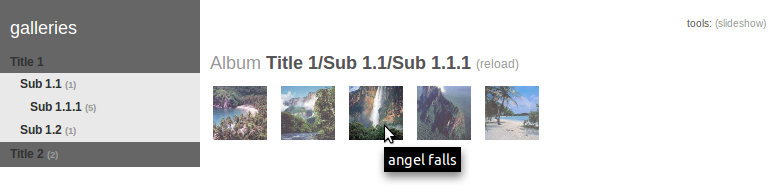

minishowcase-jm
What is it?
Minishowcase is the simplest online photo gallery you can find: put your files in a directory and browse them. You just need a webserver like Apache with PHP enabled. No database, no image preprocessing, no pain.
Minishowcase-scubabeer was a version that added subfolders with only 2-levels depth (and no images allowed at 1st level).
Minishowcase-jm is my own fork over the latest official version (v09b142), which adds infinite subfolders and addresses some limitations of the official version:
- subfolders with infinite depth
- spaces allowed in file and folder names
- better support of non-ASCII characters
- removed picture autoresize which looks ugly in small windows

How to install
- download the zipfile below
- unzip in your web server root directory (PHP needed); this will create a
minishowcase/folder (which you can safely rename) - check minishowcase is accessible through
http://<yourserver>/minishowcase(or whatever you renamed it) - make sure the
minishowcase/cachefolder is writeable by your webserver (in Ubuntu set group ownership towww-datathenchmod g+w cache), else thumbnails will be regenerated each time - put your own directory structure with your photo files under
minishowcase/galleries/
Advanced configuration
- to protect one of your subfolders put a
password.phpin it, containing the password in clear text (if you use Apache the includedminishowcase/.htaccessfile will prevent access to these files)
Downloads
30/07/2011
> minishowcase-jm v09b142-1.2 ZIP (752 Ko)
Fixed “Unknown modifier ‘+’” error which happened in some setups (thanks John
N. and K.Krivas for reporting the error)
24/02/2011
> minishowcase-jm v09b142-1.1 ZIP (752 Ko)
Fixed PHP warning on deprecated _ereg_replace (thanks to R.Pearce)_
26/10/2010
> minishowcase-jm v09b142 ZIP
(752 Ko)
Contact
Don’t hesitate to email me if you have any question or comment.
You can also get general support from the official minishowcase website.